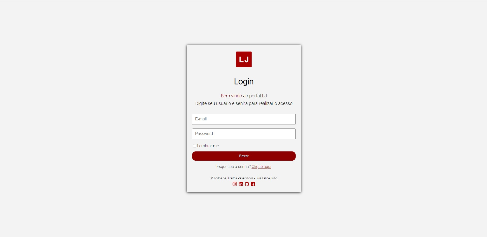
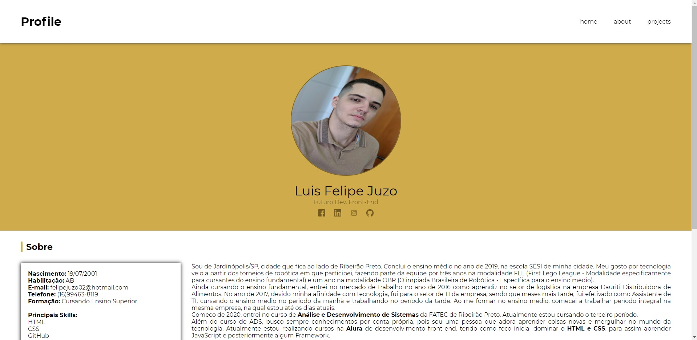

Sobre
- Nascimento: 19/07/2001
- Habilitação: AB
- E-mail: felipejuzo02@hotmail.com
- Telefone: (16)99463-8119
- Formação: Cursando Ensino Superior
- Principais Skills:
- HTML
- CSS
- Git/GitHub
- PhotoShop
Sou de Jardinópolis/SP, cidade que fica ao lado de Ribeirão Preto. Conclui o ensino médio no ano de 2019, na escola SESI de minha cidade. Meu gosto por tecnologia veio a partir dos torneios de robótica em que participei, fazendo parte da equipe por três anos na modalidade FLL (First Lego League - Modalidade especificamente para cursantes do ensino fundamental) e um ano na modalidade OBR (Olimpiada Brasileira de Robótica - Específica para o ensino médio).
Ainda cursando o ensino fundamental, entrei no mercado de trabalho no ano de 2016 como aprendiz no setor de logística na empresa Dauriti Distribuidora de Alimentos. No ano de 2017, devido minha afinidade com tecnologia, fui para o setor de TI da empresa, sendo que meses mais tarde, fui efetivado como Assistente de TI, cursando o ensino médio no período da manhã e trabalhando no período da tarde. Ao me formar no ensino médio, comecei a trabalhar período integral na mesma empresa, na qual estou até os dias atuais.
Começo de 2020, entrei no curso de Análise e Desenvolvimento de Sistemas da FATEC de Ribeirão Preto. Atualmente estou cursando o terceiro período.
Além do curso de ADS, busco sempre conhecimentos por conta própria, pois sou uma pessoa que adora aprender coisas novas e mergulhar no mundo da tecnologia. Atualmente estou realizando cursos na Alura de desenvolvimento front-end, tendo como foco inicial dominar o HTML e CSS, para assim aprender JavaScript e posteriormente algum Framework.
Para mais informações, faça o download do meu Curriculo Vitae
BaixarProjetos
Conheça um pouco dos meus primeiros projetos realizados.
Tela de Login
Como primeiro projeto realizado, foi feito uma tela de login simples, usando alguns conceitos básicos de position, border, translate, responsividade, entre outros.

Tecnologias Utilizadas
- HTML
- CSS
Para conhecer mais, acesse o meu repositório no GitHub.
RepositórioProfile - Luis Felipe
Meu segundo projeto realizado, é este que você está acessando, que será utilizado e sempre atualizado com os demais projetos que irei realizar. Nele foi utilizado alguns conceitos básicos de flexbox, float, position fixed, responsividade, entre outros.
Tecnologias Utilizadas
- HTML
- CSS
Para conhecer mais, acesse o meu repositório no GitHub.
Repositório